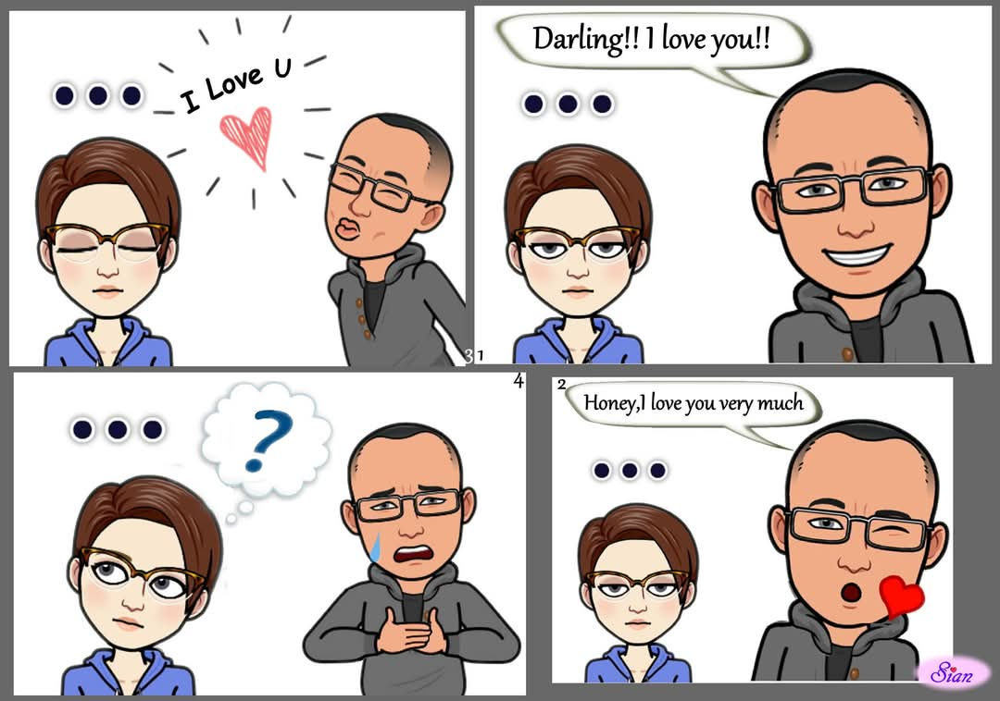
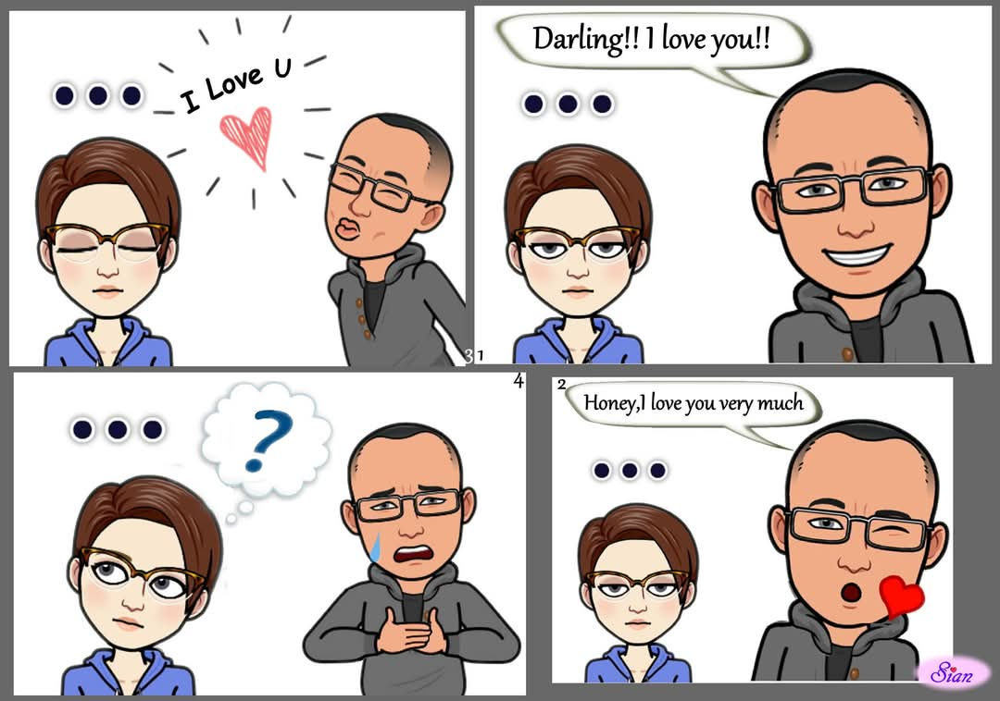
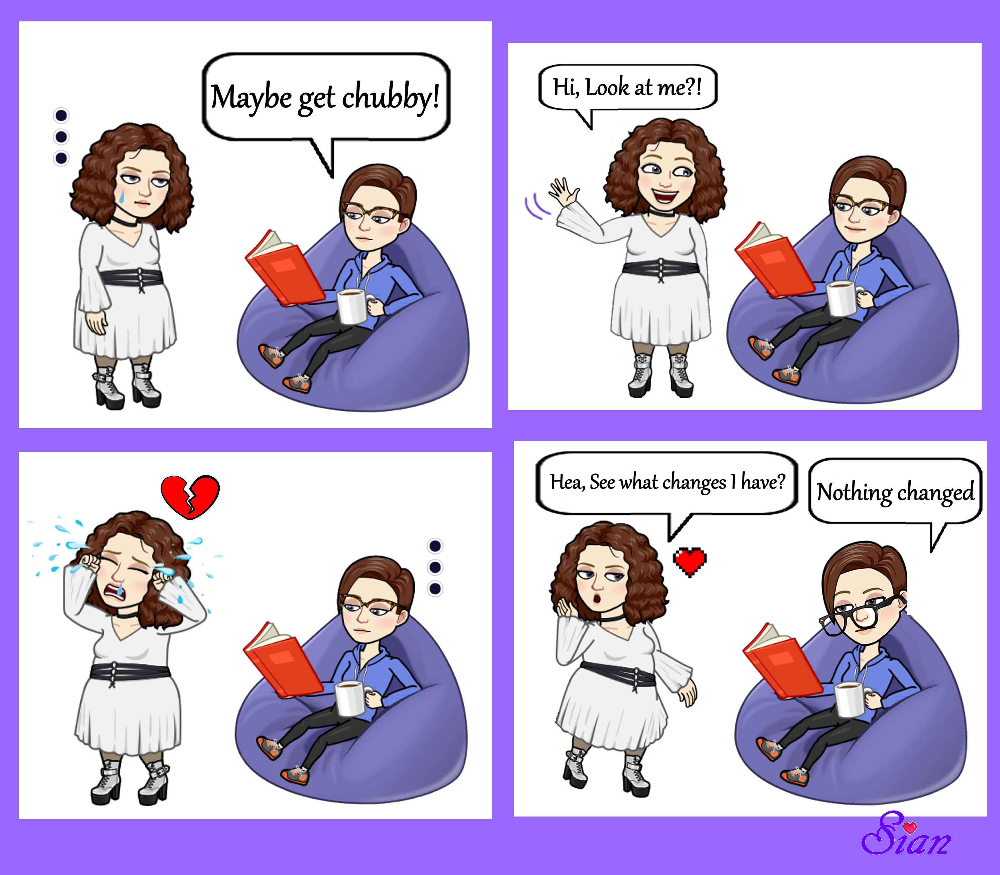
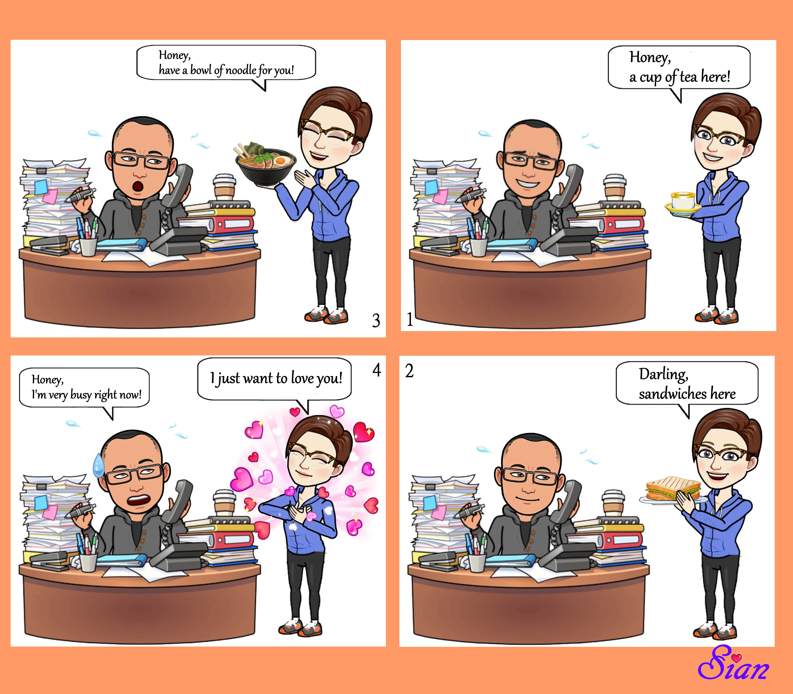
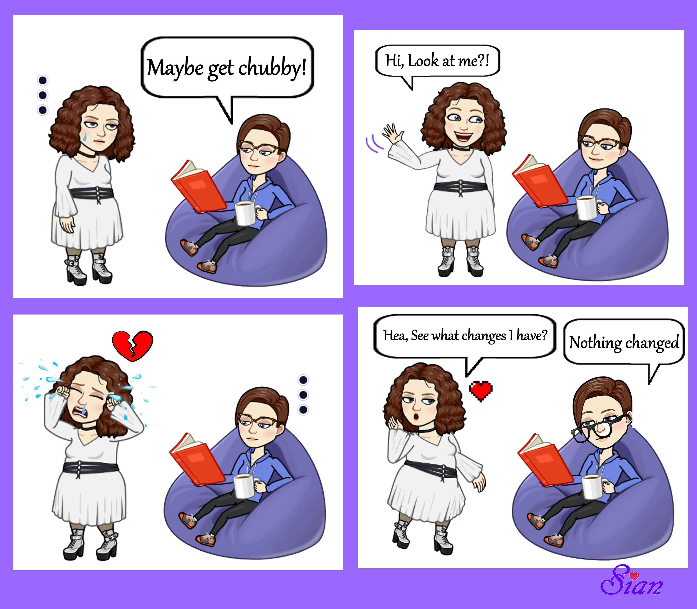
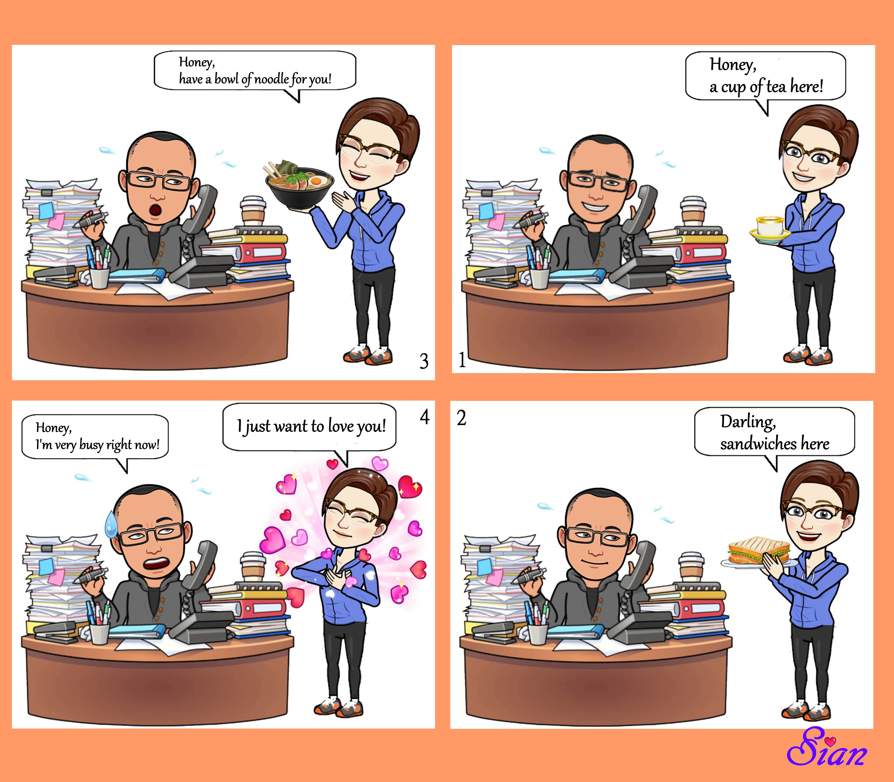

📙 Comic - English Part 1


 

 




關於我｜About Me
This is the inner world I recorded through daily life.
I’m Sian, a creator diagnosed with Asperger’s Syndrome as an adult.
I’m used to expressing myself with drawings or words instead of
speech, using comics to portray the bitter sweetness of
life.
If you’ve ever felt out of place in society, I hope my stories bring
you some resonance and companionship.